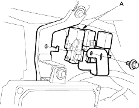
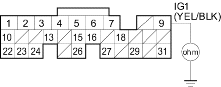

- Check for continuity between ECM/PCM connector terminal E9 and body ground.

Is there continuity?
YES |
- Go to step 22. |
NO |
- Replace the No. 17 FUEL PUMP (15 A) fuse, and substitute a known-good ECM/PCM and recheck. If the symptom/indication goes away, replace the original ECM/PCM. |

- Remove the PGM-FI main relay 2 (A).

- Check for continuity between ECM/PCM connector terminal E9 and body ground.

Is there continuity?
YES |
- Repair short in the wire between the No. 17 FUEL PUMP (15A) fuse and the ECM/PCM (E9), or the No. 17 FUEL PUMP (15 A) fuse and the PGM-FI main relay 2. Also replace the No. 17 FUEL PUMP (15A) fuse. |
NO |
- Go to step 24. |
- Remove the rear seat cushion (see page 20-237).
- Remove the access panel from the floor.
- Disconnect the fuel pump 5P connector.